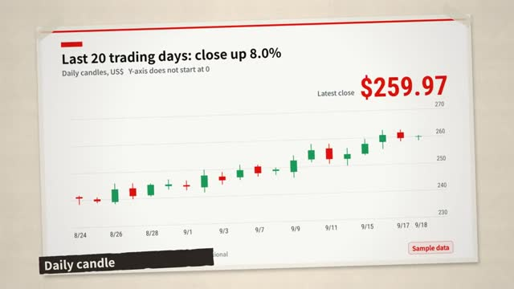
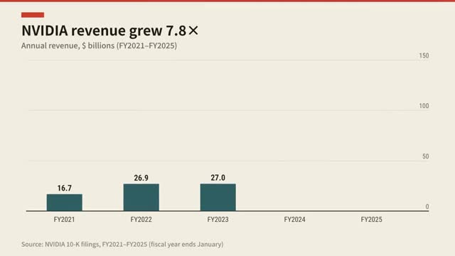
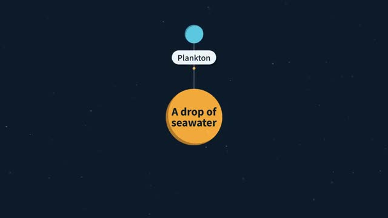
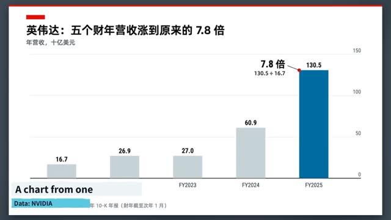
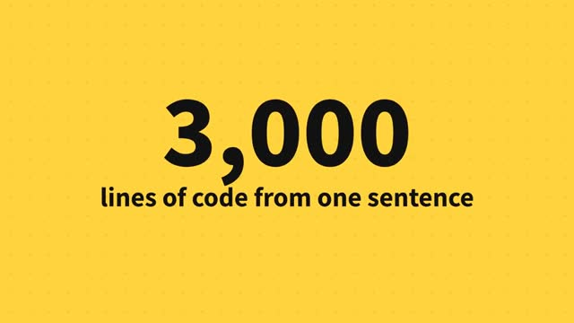
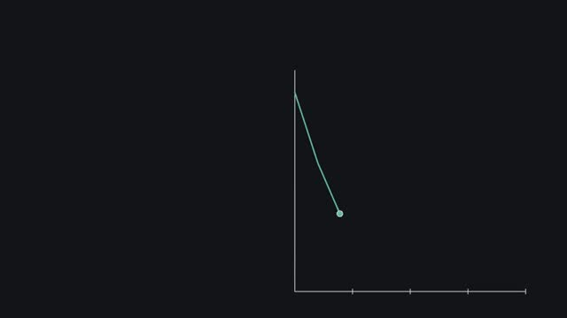
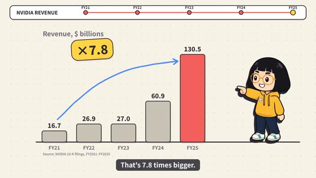
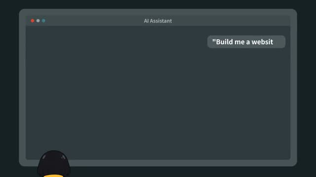
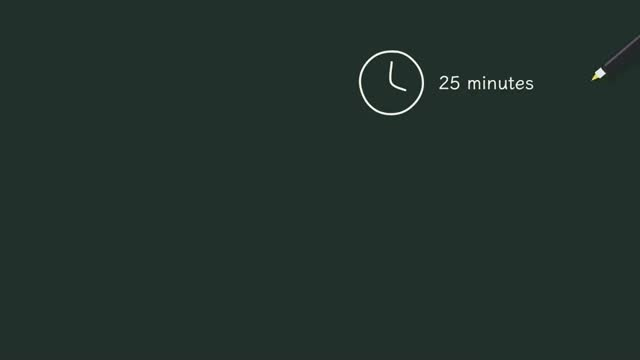

Library / Explainer Animation Styles
9 keywords in this category, each one tested and explained in plain language.
Pick keywords as you browse, then press Copy for AI and paste into ChatGPT, Claude or any AI. Copy keywords gives a plain list for Midjourney or Seedance.

The investigative news-video look: real clippings, photos and charts laid on a desk, with red lines and highlighter drawn on as the camera moves from clue to clue.

The newsroom way to animate numbers: the axes draw in first, then the data grows into place, and only one thing gets highlighted.

Bright flat shapes with no outlines in a softly glowing world, where the camera zooms between the tiny and the enormous, from a single cell to a whole planet.

Product-launch presentation style: one idea per screen, a soft glowing background, frosted-glass cards and big numbers that land the moment they're mentioned.

Words are the actors: the key word slams onto the screen on the beat, supporting words slide up from below, and there's only ever one thing to read at a time.

The calm style of popular math videos: a dark background, one idea on screen at a time, and shapes that smoothly morph from one concept into the next, with each idea keeping its own color.

A cartoon host walks the viewer through the story on a paper-and-sticker page: she points at cards, stands inside the chart, and cuts to a big reaction close-up when the number lands.

The story-channel cartoon: a simple character with thick outlines snaps between a few poses, cuts to a big reaction close-up and holds still for the punchline.

A hand-drawn explainer where a pen sketches simple pictures, arrows and words on a board while the narrator talks, then pulls back to show the whole idea as one map.